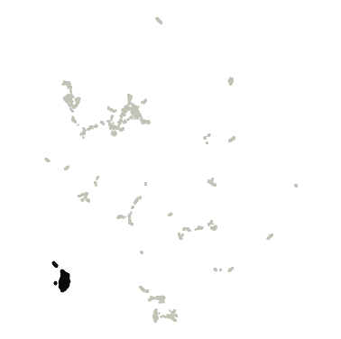
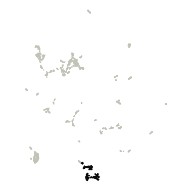
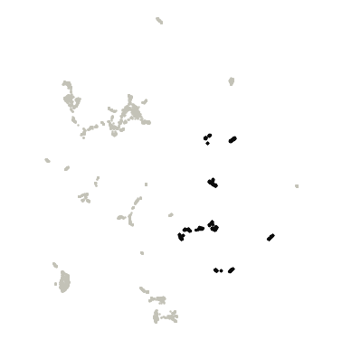
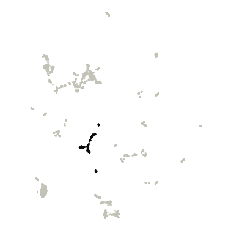
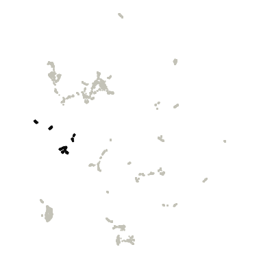
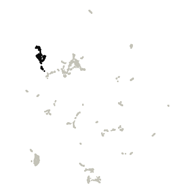
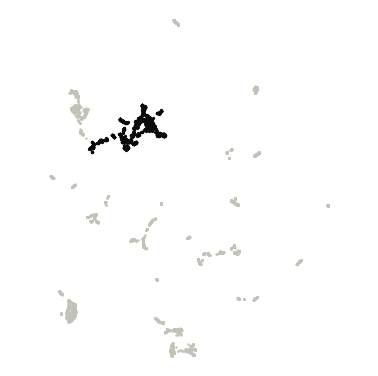

Gut vs Urinary
Gut and urinary genomes shown two ways: by their DNA sequence (DNABERT-S embeddings) and by their gene content (eggNOG gene families), each with its own clusters, plus a test of which gene families differ between the two microbiomes.
DNA-embedding map (DNABERT-S)
Genomes are placed by DNABERT-S embeddings of their DNA sequence, so genomes with similar sequence composition sit close together. Treat it as a visual impression of genetic similarity, not a measure of evolutionary distance.
Hover a point for its details. Click a legend entry to hide it; double-click to show only that entry (double-click again to show all). Drag to zoom; double-click the plot to reset. The smaller microbiome is drawn on top with a black outline. Grey points are outliers that HDBSCAN did not assign to any cluster. Open full screen.
Clusters were consistent across random runs. Across 5 runs with different random seeds, the map gave 6-6 clusters (mean agreement 0.97, lowest 0.95; Adjusted Rand Index).
| Cluster | Genomes | Gut | Urinary |
|---|---|---|---|
| Cluster 0 | 565 | 565 (100%) | 0 (0%) |
| Cluster 1 | 338 | 328 (97%) | 10 (3%) |
| Cluster 2 | 284 | 283 (100%) | 1 (0%) |
| Cluster 3 | 583 | 539 (92%) | 44 (8%) |
| Cluster 4 | 771 | 769 (100%) | 2 (0%) |
| Cluster 5 | 2,011 | 2,008 (100%) | 3 (0%) |
| Outliers | 257 | 252 (98%) | 5 (2%) |
Functional map (eggNOG gene families)
Here genomes are placed by what their genes do. Each genome is described by the relative abundance of 7,589 eggNOG gene families (each family's share of the genome's genes), and genomes with similar profiles (Bray–Curtis dissimilarity) sit close together.
Hover a point for its details. Click a legend entry to hide it; double-click to show only that entry (double-click again to show all). Drag to zoom; double-click the plot to reset. The smaller microbiome is drawn on top with a black outline. Grey points are outliers that HDBSCAN did not assign to any cluster. Open full screen.
Clusters were mostly consistent across random runs; boundaries may shift slightly. Across 5 runs with different random seeds, the map gave 7-9 clusters (mean agreement 0.85, lowest 0.73; Adjusted Rand Index). Agreement between these functional clusters and the DNA-embedding clusters: Adjusted Rand Index 0.45 (1 = identical groupings, 0 = unrelated), computed on the 88% of genomes that are in a cluster on both maps.
Top 10 COG gene families in each functional cluster
How they are chosen. Enrichment is the mean relative abundance of a COG family in the cluster's genomes divided by its mean in all other clustered genomes of this view. Only families present in at least 10% of the cluster's genomes are ranked, so one-off genes can't top the list. "In this cluster" is the share of the cluster's genomes carrying the family. The ranking is descriptive; no per-cluster test is applied. 378 outlier genomes are excluded. The top 50 per cluster are in functional_cluster_top_cog_terms.csv.

Cluster 0 · 629 genomes
| COG | Description | Enrichment | In this cluster | In other clusters |
|---|---|---|---|---|
| COG4646 | Protein of unknown function (DUF2958) | 87× | 14% | <1% |
| COG3847 | Flp Fap pilin component | 67× | 95% | 2% |
| COG5265 | ATP-binding cassette subfamily B | 54× | 84% | 2% |
| COG2852 | Protein of unknown function (DUF559) | 39× | 99% | 12% |
| COG5606 | Helix-turn-helix domain | 38× | 34% | 1% |
| COG3883 | PFAM NLP P60 protein | 38× | 96% | 6% |
| COG2222 | sugar isomerase, AgaS family | 35× | 98% | 18% |
| COG3116 | cell division | 32× | 96% | 5% |
| COG3261 | Respiratory-chain NADH dehydrogenase, 49 Kd subunit | 31× | 89% | 9% |
| COG3260 | NADH ubiquinone oxidoreductase, 20 | 29× | 88% | 8% |

Cluster 1 · 555 genomes
| COG | Description | Enrichment | In this cluster | In other clusters |
|---|---|---|---|---|
| COG5107 | Domain of Unknown Function (DUF349) | 176× | 92% | <1% |
| COG4704 | Fibrobacter succinogenes major domain (Fib_succ_major) | 166× | 96% | <1% |
| COG4797 | Motility related/secretion protein | 121× | 38% | <1% |
| COG4360 | Domain of unknown function (DUF4922) | 104× | 28% | <1% |
| COG3712 | Domain of unknown function (DUF4974) | 92× | 68% | 4% |
| COG4735 | Psort location | 82× | 64% | 2% |
| COG3489 | Psort location CytoplasmicMembrane, score | 81× | 51% | <1% |
| COG3488 | Di-haem oxidoreductase, putative peroxidase | 81× | 58% | <1% |
| COG4520 | Psort location CytoplasmicMembrane, score 9.46 | 74× | 38% | <1% |
| COG3427 | Polyketide cyclase | 66× | 93% | 1% |

Cluster 2 · 802 genomes
| COG | Description | Enrichment | In this cluster | In other clusters |
|---|---|---|---|---|
| COG4566 | helix_turn_helix, Lux Regulon | 344× | 25% | <1% |
| COG3539 | Fimbrial protein | 334× | 20% | <1% |
| COG2951 | Lytic murein transglycosylase B | 193× | 45% | <1% |
| COG3133 | Glycine zipper 2TM domain | 192× | 37% | 0% |
| COG2927 | Part of the beta sliding clamp loading complex, which hydrolyzes ATP to load the beta clamp onto primed DNA… | 178× | 40% | 0% |
| COG2854 | ABC-type transport system involved in resistance to organic solvents auxiliary component | 171× | 43% | <1% |
| COG2609 | Component of the pyruvate dehydrogenase (PDH) complex, that catalyzes the overall conversion of pyruvate to… | 164× | 39% | 0% |
| COG3024 | Inhibits all the catalytic activities of DNA gyrase by preventing its interaction with DNA. Acts by binding… | 162× | 37% | 0% |
| COG2916 | Belongs to the histone-like protein H-NS family | 162× | 30% | 0% |
| COG2821 | Murein-degrading enzyme. May play a role in recycling of muropeptides during cell elongation and or cell… | 147× | 39% | <1% |

Cluster 3 · 353 genomes
| COG | Description | Enrichment | In this cluster | In other clusters |
|---|---|---|---|---|
| COG4814 | Alpha/beta hydrolase of unknown function (DUF915) | 366× | 50% | <1% |
| COG4473 | ABC transporter | 315× | 80% | <1% |
| COG5503 | Belongs to the UPF0356 family | 307× | 72% | <1% |
| COG5353 | Protein conserved in bacteria | 289× | 69% | <1% |
| COG4483 | Bacterial protein of unknown function (DUF910) | 280× | 65% | <1% |
| COG4479 | Belongs to the UPF0346 family | 279× | 68% | <1% |
| COG4703 | Protein of unknown function (DUF1797) | 218× | 49% | <1% |
| COG4858 | Protein of unknown function (DUF1129) | 218× | 72% | <1% |
| COG4471 | Uncharacterized protein conserved in bacteria (DUF2129) | 217× | 79% | <1% |
| COG4940 | Putative Competence protein ComGF | 191× | 54% | <1% |

Cluster 4 · 332 genomes
| COG | Description | Enrichment | In this cluster | In other clusters |
|---|---|---|---|---|
| COG4752 | SAM-dependent RNA methyltransferase | 133× | 44% | <1% |
| COG1424 | Catalyzes the transformation of pimelate into pimeloyl- CoA with concomitant hydrolysis of ATP to AMP | 30× | 21% | <1% |
| COG1852 | Protein of unknown function DUF116 | 30× | 37% | 1% |
| COG5295 | Tetratricopeptide repeat | 24× | 49% | 8% |
| COG2733 | membrane | 24× | 34% | 5% |
| COG1865 | Adenosylcobinamide amidohydrolase | 20× | 26% | 2% |
| COG4542 | GHMP kinases N terminal domain | 17× | 26% | 3% |
| COG5599 | protein tyrosine phosphatase activity | 15× | 11% | <1% |
| COG4241 | Predicted membrane protein (DUF2232) | 15× | 52% | 5% |
| COG2990 | Protein of unknown function (DUF535) | 14× | 37% | 4% |

Cluster 5 · 564 genomes
| COG | Description | Enrichment | In this cluster | In other clusters |
|---|---|---|---|---|
| COG4636 | Putative restriction endonuclease | 24× | 44% | 2% |
| COG1655 | Uncharacterized protein conserved in bacteria (DUF2225) | 16× | 28% | 2% |
| COG2703 | Psort location Cytoplasmic, score 8.87 | 13× | 57% | 3% |
| COG1728 | Protein of unknown function (DUF327) | 13× | 32% | 3% |
| COG3359 | Predicted 3'-5' exonuclease related to the exonuclease domain of PolB | 11× | 76% | 4% |
| COG3044 | Psort location Cytoplasmic, score 8.87 | 11× | 62% | 4% |
| COG1334 | flagellar protein FlaG | 9× | 29% | 3% |
| COG5275 | Psort location Cytoplasmic, score 8.87 | 9× | 12% | 1% |
| COG1406 | Hemerythrin HHE cation binding domain | 9× | 23% | 3% |
| COG2602 | Psort location CytoplasmicMembrane, score | 8× | 35% | 3% |

Cluster 6 · 1,196 genomes
| COG | Description | Enrichment | In this cluster | In other clusters |
|---|---|---|---|---|
| COG5019 | ATPase. Has a role at an early stage in the morphogenesis of the spore coat | 19× | 33% | 2% |
| COG0857 | DHHA2 | 15× | 38% | 4% |
| COG3411 | Ferredoxin | 11× | 46% | 8% |
| COG0070 | PFAM glutamate synthase alpha subunit domain protein | 10× | 31% | 3% |
| COG2000 | Putative Fe-S cluster | 9× | 33% | 6% |
| COG1306 | Putative glycosyl hydrolase domain | 9× | 39% | 7% |
| COG4813 | Trehalose utilisation | 8× | 21% | 4% |
| COG4379 | tail protein | 7× | 18% | 2% |
| COG4474 | Protein of unknown function (DUF1273) | 7× | 58% | 13% |
| COG4333 | Protein of unknown function (DUF1643) | 7× | 18% | 3% |
What differs between gut and urinary genomes?
For each eggNOG gene family, a two-sided Mann-Whitney U test compares its relative abundance (its share of a genome's genes) between the two microbiomes. P-values are corrected for all 7,589 tests with the Benjamini–Hochberg false discovery rate.
Every gene family tested
How to read this. The effect size (rank-biserial correlation, −1 to +1) says how consistently one microbiome ranks higher: +1 means every urinary genome has more of the family than every gut genome, −1 the reverse, 0 no tendency. With many genomes even tiny differences reach significance, so families are highlighted only with q < 0.05 and an effect of at least 0.3. "In gut genomes" is the share of gut genomes carrying the family at all.
Top 25 gene families higher in gut genomes
Sorted by effect size. All results: comparison_mannwhitney.csv.
| Gene family | Description | In gut genomes | In urinary genomes |
Per 1,000 genes (gut) | Per 1,000 genes (urinary) | Effect size | q-value |
|---|---|---|---|---|---|---|---|
| COG0621 | Catalyzes the methylthiolation of N6- (dimethylallyl)adenosine (i(6)A), leading to the formation of 2-… | 95% | 58% | 1.48 | 0.36 | -0.82 | 4.3e-28 |
| COG1592 | Rubrerythrin | 82% | 3% | 0.98 | 0.03 | -0.79 | 1.4e-26 |
| COG0674 | ferredoxin oxidoreductase | 84% | 29% | 0.84 | 0.12 | -0.72 | 3.6e-22 |
| COG2509 | Oxidoreductase | 74% | 3% | 0.58 | 0.02 | -0.71 | 1.0e-21 |
| COG1179 | ThiF family | 83% | 32% | 0.51 | 0.10 | -0.71 | 2.9e-21 |
| COG0696 | Catalyzes the interconversion of 2-phosphoglycerate and 3-phosphoglycerate | 80% | 28% | 0.55 | 0.07 | -0.70 | 3.4e-21 |
| COG0370 | transporter of a GTP-driven Fe(2 ) uptake system | 86% | 42% | 0.93 | 0.20 | -0.70 | 1.4e-20 |
| COG1774 | PSP1 C-terminal domain protein | 78% | 18% | 0.53 | 0.07 | -0.69 | 1.6e-20 |
| COG0534 | Mate efflux family protein | 94% | 89% | 3.58 | 0.92 | -0.68 | 1.0e-19 |
| COG1032 | Radical SAM domain protein | 74% | 18% | 1.06 | 0.06 | -0.68 | 6.1e-20 |
| COG0426 | flavodoxin nitric oxide synthase | 73% | 14% | 0.49 | 0.04 | -0.67 | 1.8e-19 |
| COG2768 | PFAM 4Fe-4S ferredoxin iron-sulfur binding domain protein | 68% | 5% | 0.72 | 0.02 | -0.66 | 4.4e-19 |
| COG0326 | Hsp90 protein | 73% | 23% | 0.43 | 0.07 | -0.63 | 2.5e-17 |
| COG1521 | Catalyzes the phosphorylation of pantothenate (Pan), the first step in CoA biosynthesis | 72% | 15% | 0.58 | 0.08 | -0.61 | 4.4e-16 |
| 2E3FD | TSCPD domain | 60% | 0% | 0.35 | 0.00 | -0.60 | 1.3e-16 |
| COG0655 | NADPH-dependent FMN reductase | 72% | 26% | 0.89 | 0.10 | -0.60 | 9.1e-16 |
| COG0635 | Involved in the biosynthesis of porphyrin-containing compound | 94% | 82% | 0.94 | 0.46 | -0.60 | 3.1e-15 |
| COG1387 | DNA polymerase alpha chain like domain | 73% | 32% | 0.71 | 0.12 | -0.59 | 1.9e-15 |
| COG0726 | Polysaccharide deacetylase | 89% | 68% | 1.52 | 0.51 | -0.59 | 5.6e-15 |
| COG0809 | Transfers and isomerizes the ribose moiety from AdoMet to the 7-aminomethyl group of 7-deazaguanine… | 87% | 55% | 0.57 | 0.23 | -0.59 | 5.5e-15 |
| COG1971 | Probably functions as a manganese efflux pump | 71% | 23% | 0.48 | 0.08 | -0.59 | 2.8e-15 |
| COG0826 | Peptidase, U32 family | 93% | 62% | 1.23 | 0.53 | -0.59 | 7.7e-15 |
| COG3968 | Psort location Cytoplasmic, score 8.87 | 61% | 3% | 0.42 | 0.01 | -0.59 | 9.3e-16 |
| COG4198 | Protein of unknown function (DUF1015) | 57% | 0% | 0.40 | 0.00 | -0.57 | 5.3e-15 |
| COG0622 | Calcineurin-like phosphoesterase superfamily domain | 77% | 48% | 0.70 | 0.19 | -0.55 | 4.0e-13 |
Top 25 gene families higher in urinary genomes
Sorted by effect size.
| Gene family | Description | In gut genomes | In urinary genomes |
Per 1,000 genes (gut) | Per 1,000 genes (urinary) | Effect size | q-value |
|---|---|---|---|---|---|---|---|
| COG0364 | Catalyzes the oxidation of glucose 6-phosphate to 6- phosphogluconolactone | 16% | 89% | 0.07 | 0.46 | +0.76 | 2.4e-57 |
| COG1230 | Cation efflux family | 18% | 92% | 0.10 | 0.54 | +0.75 | 7.5e-50 |
| COG0208 | Provides the precursors necessary for DNA synthesis. Catalyzes the biosynthesis of deoxyribonucleotides from… | 24% | 94% | 0.13 | 0.61 | +0.75 | 4.6e-40 |
| COG1780 | Probably involved in ribonucleotide reductase function | 10% | 82% | 0.05 | 0.50 | +0.73 | 6.8e-76 |
| COG0431 | NADPH-dependent FMN reductase | 24% | 89% | 0.18 | 0.94 | +0.72 | 1.3e-37 |
| COG0362 | Catalyzes the oxidative decarboxylation of 6- phosphogluconate to ribulose 5-phosphate and CO(2), with… | 17% | 88% | 0.08 | 0.43 | +0.72 | 1.5e-47 |
| COG1113 | Amino acid permease | 18% | 86% | 0.19 | 1.19 | +0.72 | 6.1e-47 |
| COG0803 | Belongs to the bacterial solute-binding protein 9 family | 55% | 97% | 0.42 | 1.60 | +0.71 | 1.9e-23 |
| COG1108 | ABC 3 transport family | 51% | 98% | 0.38 | 1.17 | +0.70 | 1.8e-23 |
| COG2813 | Methyltransferase small domain | 18% | 89% | 0.11 | 0.50 | +0.70 | 3.9e-43 |
| COG0588 | Catalyzes the interconversion of 2-phosphoglycerate and 3-phosphoglycerate | 23% | 91% | 0.14 | 0.59 | +0.69 | 8.5e-36 |
| COG0477 | TIGRFAM drug resistance transporter, EmrB QacA subfamily | 82% | 100% | 3.12 | 8.15 | +0.68 | 6.6e-20 |
| COG0209 | Provides the precursors necessary for DNA synthesis. Catalyzes the biosynthesis of deoxyribonucleotides from… | 43% | 95% | 0.25 | 0.72 | +0.68 | 1.1e-23 |
| COG1072 | Pantothenic acid kinase | 10% | 77% | 0.05 | 0.38 | +0.68 | 5.3e-65 |
| COG0762 | YGGT family | 26% | 97% | 0.14 | 0.48 | +0.67 | 2.6e-30 |
| COG0026 | Catalyzes the ATP-dependent conversion of 5- aminoimidazole ribonucleotide (AIR) and HCO(3)(-) to N5-… | 16% | 82% | 0.08 | 0.43 | +0.66 | 7.6e-44 |
| COG0783 | Belongs to the Dps family | 20% | 85% | 0.11 | 0.48 | +0.66 | 3.8e-36 |
| COG1249 | Dihydrolipoyl dehydrogenase | 45% | 85% | 0.39 | 1.30 | +0.65 | 1.2e-21 |
| COG0266 | Involved in base excision repair of DNA damaged by oxidation or by mutagenic agents. Acts as DNA glycosylase… | 26% | 89% | 0.16 | 0.55 | +0.65 | 6.5e-29 |
| COG0225 | Has an important function as a repair enzyme for proteins that have been inactivated by oxidation. Catalyzes… | 33% | 92% | 0.20 | 0.62 | +0.64 | 3.6e-24 |
| COG1121 | ABC transporter | 52% | 97% | 0.35 | 0.99 | +0.63 | 3.4e-19 |
| COG2141 | COG2141 Coenzyme F420-dependent N5,N10-methylene tetrahydromethanopterin reductase and related… | 14% | 75% | 0.16 | 0.98 | +0.63 | 3.7e-43 |
| COG0308 | Peptidase family M1 domain | 24% | 86% | 0.17 | 0.61 | +0.63 | 3.4e-29 |
| COG2151 | FeS assembly SUF system protein | 23% | 83% | 0.13 | 0.56 | +0.62 | 8.2e-29 |
| COG0239 | Important for reducing fluoride concentration in the cell, thus reducing its toxicity | 37% | 86% | 0.24 | 0.80 | +0.61 | 1.1e-20 |